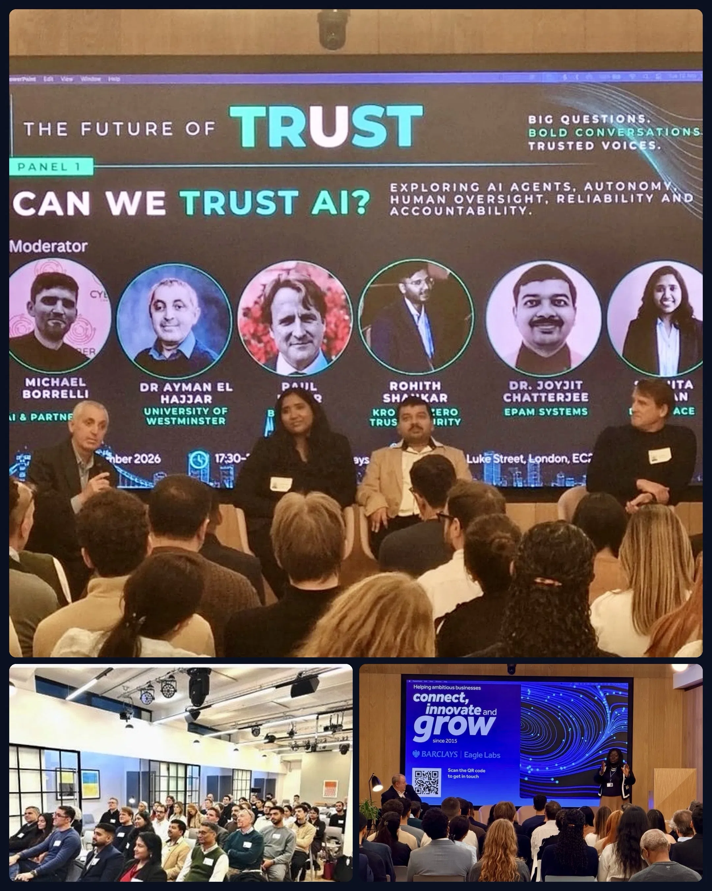
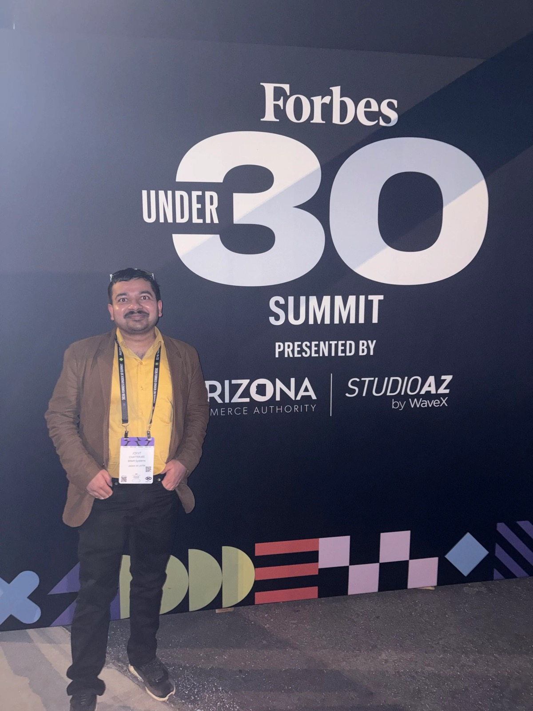
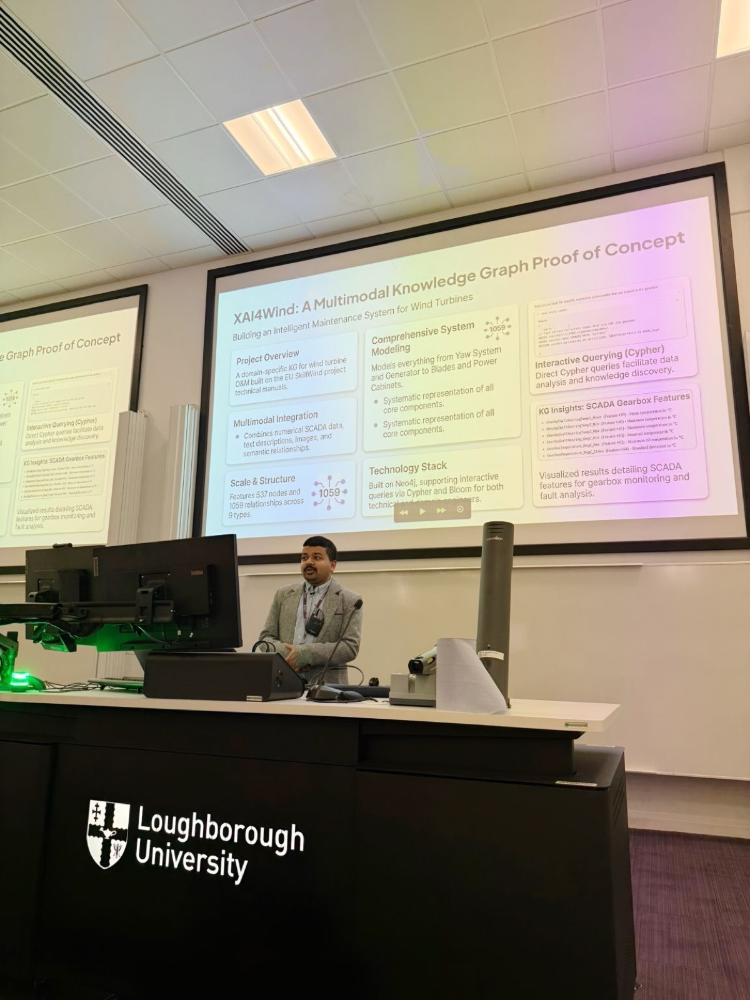
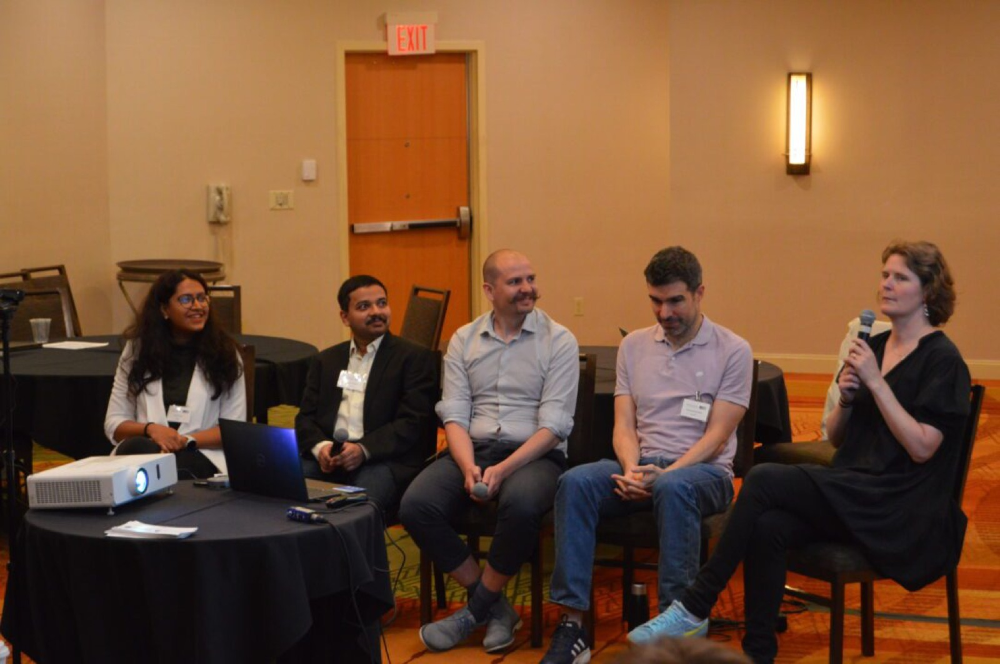
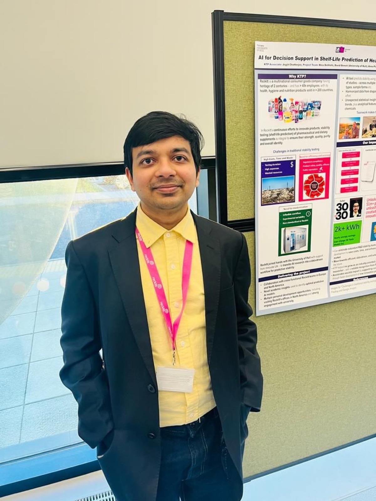
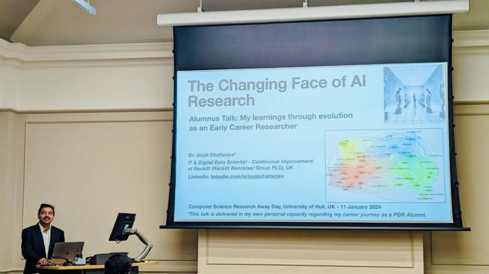
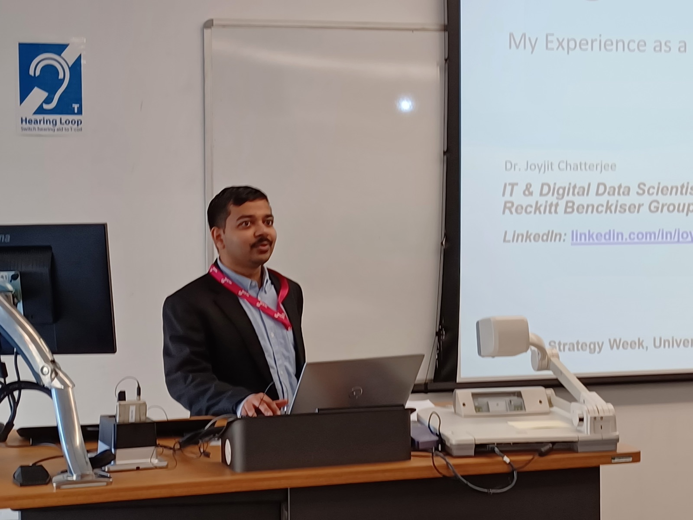

Speaking & media
A voice in enterprise AI. Explore the conversations, appearances and public perspectives connecting research, industry and responsible innovation.
Panels & talks Event photographs Watch, listen & read 05 / In the room
A voice in enterprise AI. Invited panels, executive roundtables and international talks connecting AI products, industrial operations and trustworthy innovation.
10 Nov 2026
Can we trust AI? Barclays Eagle Labs & Cyber London, London
Event context & participants1 topic Panel contribution Discussed agentic AI in factories of the future, connected labs and tactical procurement at Barclays Innovation Hub, London, in a panel organised by Cyber London and Barclays. Full event record → Oct 2024
Panel: Next Gen AI Products CXO Group Roundtable Discussion (with Microsoft and Dell)
Event context & participants1 topic Panel context Invited panellist at the CXO Group roundtable alongside industry leaders from Microsoft and Dell. Full event record → 2024
Panel: EthonAI Expert Roundtable "From Statistics to Causal AI" With Bosch, Lindt, Infineon Technologies, SFS Group etc.
Event context & participants1 topic Panel context Invited panellist alongside industry leaders from Bosch, Lindt, Infineon Technologies and SFS Group. Full event record → 2024
AI for Continued Process Verification at Reckitt FMCG CQO Roundtable (Unilever, Sanofi, Haleon, Galderma, Kenvue etc.)
Event context & participants1 topic Audience Delivered a talk at the FMCG CQO Roundtable to quality leaders from Unilever, ELC Europe, Sanofi, Haleon, Galderma and Kenvue. Full event record → 11 Jun 2025
Panel: The opportunities and challenges of generative AI in wind energy IEA Wind Task 43 AGM + Technical Expert Meeting, Golden, Colorado, USA
Event context & participants1 topic Organiser report and photograph The IEA Wind Task 43 organiser report identifies Joyjit as a panel participant alongside representatives from Microsoft, NREL, Siemens and OST. Full event record → Apr 2020
Transparent, Accurate and Scalable AI for Intelligent Decision Support in O&M of Wind Turbines Carnegie Mellon University (CMU) Symposium on AI and Social Good
Full event record → Apr 2024
"AI for Predictive Stability" and "AI for Continued Process Verification" Global QC Excellence Forum at Reckitt
Event context & participants1 topic Audience Presented to Reckitt global QC/QA teams, including the SVP and Global Head of Quality, at the Global QC Excellence Forum. Full event record → View photo ↗ 11 Jun 2025
Speaking on generative AI and wind energy Speaking into the microphone during the IEA Wind Task 43 panel in Golden, Colorado, alongside participants from Microsoft, NREL, Siemens and OST. Joyjit is second from left.
From my personal archive 
View photo ↗ 10 Nov 2026
Agentic AI at Barclays Innovation Hub Panellist at the Cyber London and Barclays event in London, discussing agentic AI in factories, connected labs and tactical procurement.
Original post / source ↗ View photo ↗ 25 Oct 2026
Knowledge graphs for power-line inspection Presenting research on a graph-grounded multimodal agent for trustworthy power-line operations and maintenance at the GLOW workshop, ISWC 2026, Bari.
Original post / source ↗ 
View photo ↗ Apr 2026
Part of the Forbes Under 30 community At the Forbes Under 30 Summit in Phoenix, Arizona, as a Forbes 30 Under 30 Europe lister.
Original post / source ↗ 
View photo ↗ 5 Mar 2026
Trustworthy AI starts with domain knowledge A guest lecture at Loughborough University on knowledge representation and reasoning for safety-critical engineering.
Original post / source ↗ View photo ↗ 19 Oct 2026
AI, mobility and public trust An invited guest at a House of Lords evidence session on the legal and ethical frameworks for autonomous vehicle technology.
Original post / source ↗ View photo ↗ Nov 2025
GenAI meets the wind industry An invited talk for Queen Mary University of London on generative AI, knowledge graphs and Wind Task 43, at the London City Institute of Technology campus.
Original post / source ↗ 
View photo ↗ 11 Jun 2025
Generative AI and the future of wind energy A panel discussion at the IEA Wind Task 43 Annual General Meeting in Golden, Colorado, alongside participants from Microsoft, NREL, Siemens and OST. Photograph: IEA Wind Task 43.
Original post / source ↗ 
View photo ↗ 7 Mar 2023
AI research, ready for industry Sharing AI shelf-life prediction research at the Hull KTP celebration, Aura Innovation Centre, March 2023. Joyjit Chatterjee, via LinkedIn.
Original post / source ↗ 
View photo ↗ 11 Jan 2024
Returning to Hull as a distinguished alumni speaker Delivering an invited Distinguished Alumni Talk at the University of Hull, 11 January 2024. Photos credited in Joyjit’s post to Nina Dethlefs and Koorosh Aslansefat.
Original post / source ↗ 
View photo ↗ 11 Oct 2024
Translating research into tangible value Speaking at the University of Hull’s Research and Knowledge Exchange Strategy Week about my experience as a KTP Associate alumnus.
From my personal archive Let’s talk about useful AI. Enterprise adoption, trustworthy systems, industrial applications and the journey from research to delivery.
Speaking & collaboration ↗ All talks & appearances →
Close ×
Open original ↗